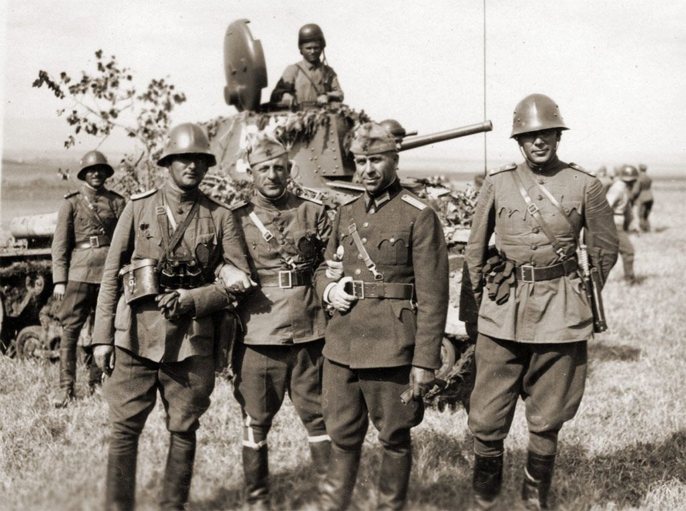
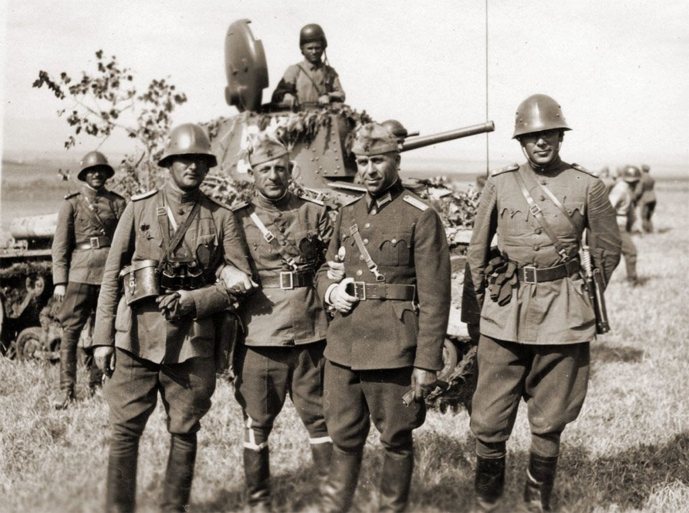
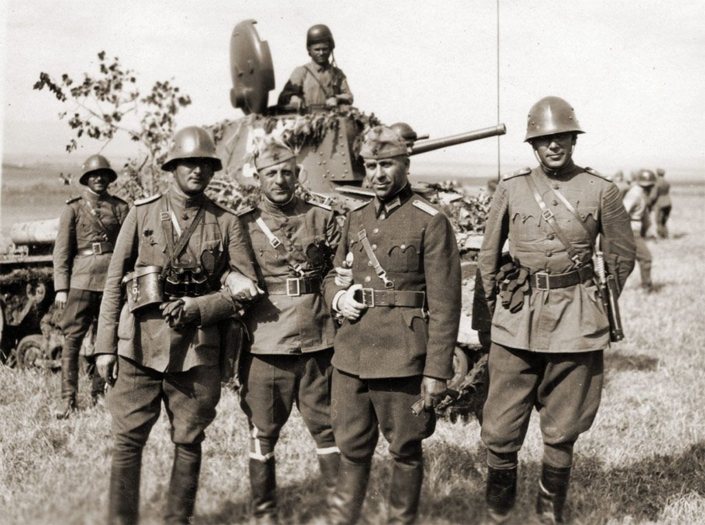
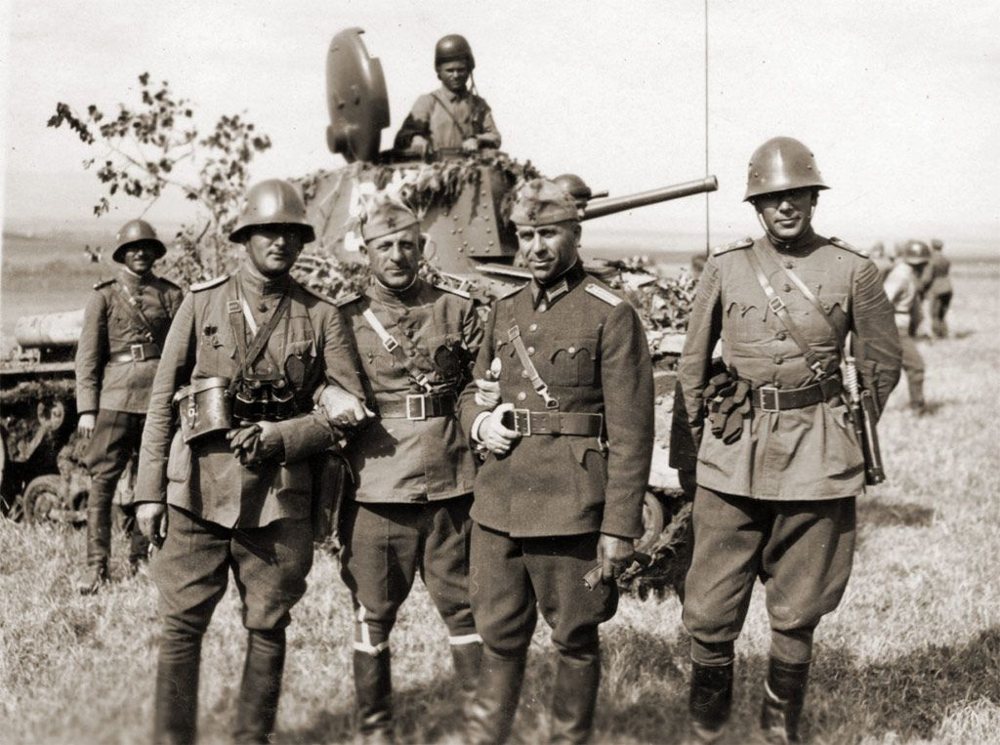
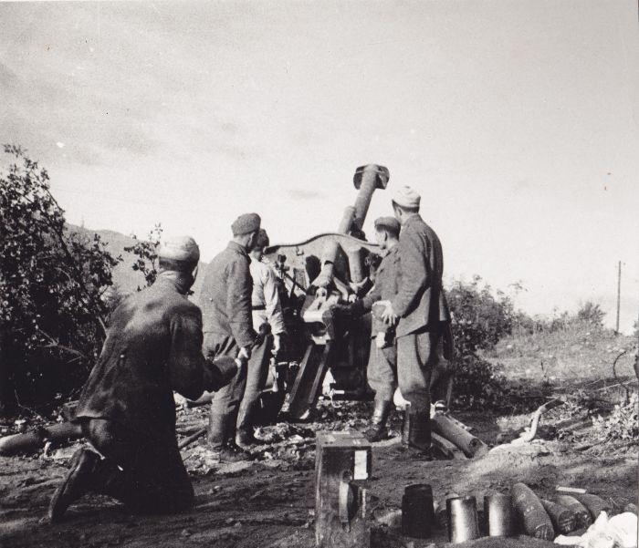
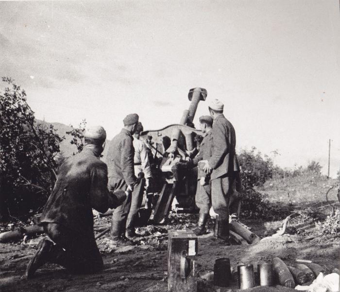

На 1 март 1941 година България се присъединява във войната към страната на Тристранния пакт като подписва договор за присъединяване във Виена. Страната е поставена под голям натиск от Германия и няма друг избор освен да влезе във Втората световна война, която се оказва войната с най-голям брой невинни (цивилни) жертви. България успява да възстанови националния идеал, поне за кратко, като през януари 1942 г. получава власт над района на Зайчар, Крагуевац, Прищина и Бела паланка. За жалост още от 1943 г. Тристранния пакт започва да отстъпва на Съюзниците и става ясно, че върви към загуба на войната. В хода на събитията България придобира Южна Добруджа, която е единствената територия, която запазва. В последните етапи от войната България е притисната от Съюзниците и на 5 септември 1944 е принудена да обърне гръб на Германия. Българската войска участва в заключителните битки срещу Тристранния пакт и дава 30 000 жертви. България успява да направи най-доброто, което може от ситуацията и като се имат в предвит обстоятелствата, страната излиза в добро положение от войната благодарение на своята политика.
 

България участва активно във финалната фаза на войната. Благодарение на показаната активност, страната излиза от войната в много по-благоприятно положение. Първата задача на българската армия е да унищожи отбраняващите се германски войски в София – Ниш – Прищина, Кюстендил – Скопие и Горна Джумая – Велес. На 1 октомври 1944 общата численост на армията е около половин милион души. Една от най-важните е Нишката операция, когато Втора Българска армия се сражава с елитната немска СС дивизия „Принц Ойген”. Немците са разгромени с помощта на 17-а въздушна армия на Трети украински фронт. По времето на Страцинско– Кумановската настъпателна операция, Първа Българска армия успява да овладее изградените германски рубежи. От 15 октомври до 14 ноември Четвърта армия провежда Брегалнишко–струмишката настъпателна операция, Кочани и района Щип са освободени, а оттеглящия се противник е преследван до долината на Вардар. Храброто участие на Българската войска е забелязано от великите сили в договорите за примирие и помага за облекчаването на поставените накъзания върху страната след края на войната.


България се променя изключително много след Втората световна война. Обществото е обезсърчено заради поредната загубена война. Хората са нещастни, защото са загубили роднини и домове. Най-много цивилни жертви, около 10 000, има след бомбардировката на англо-американската авиация над страната през лятото на 1944 г.. Най-силно страда София, където са били хвърляни не само бомби, но и детски играчики пълни с експлозиви. Много згради и индустриални заводи са разрушени. Икономиката е изключително нестабилна поради наложените репарации над България и недостатъка на работници и предприятия. В хауса на войната комунистическата партия си проправя път към властта. Под натиска на СССР страната става член на Съветския лагер за следващите 42 години. Благодарение на своето участие в разгрома на Германия, България излиза от войната без да привлича много негативно внимание върху себе си в международен план. За жалост след войната идеалът за единна България вече изглежда толкова непостижим, че бива забравен. Познанието на ефектите на Втората световна война върху България е много важно, за всеки българин, който иска да разбере, защо в днешно време страната е такава каквато е.